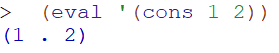

class Start
lab08有点难……numpy还出现问题？……那算了把下一个把
装了eclipse可以看到class和attribute了，不过还是有点难……
感觉还是多用草稿手写把……太他妈抽象
还有那个抽风的doctest，还是自己手写Print和comment把
Class End
menter05 Start
scheme display practice
- list无点，pair是cons命令，理论都是点，一般只保留最后一个点
- car格子进去是要加括号，cdr格子进去不加括号，如果cdr是nil也可以省略括号
- 返回num的值
 - pair(1.2) cdr 之后 = 2 而list(1 2) cdr之后为(2)，一个是number一个不是
menter05 End
Ants Project Start
写草稿，电子的写，手头也写，手头写需思考的，电子写需临时记忆的后续用的
eclipse的优点：会显示某些函数源码和用法，function：hover会显示代码定义，显示所有attribute和方法和class无敌啊